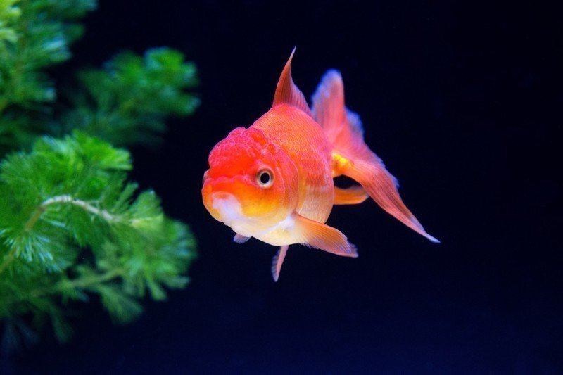

慣れない水中を泳いでいた。
私は元々、ある男のもとで飼われていた金魚である。
飼い主の男がやけを起こしたせいで、新たな場所で不自由な生活を強いられていた。
そこでは文字盤の針が上下を同時に指し示しても餌が出てくることはない。日によってタイミングはバラバラだ。
また、こうして泳いでいる水もしばらく取り替えられていないため、視界が非常に悪い。踏んだり蹴ったりである。
私は今、飼い主から財布をすった女のもとで飼われている。縁というものは実に不可思議なものだ。
数日前のことを思い出した。
自殺しようとしていた飼い主は、私が必死に飛び跳ねる姿を見て何とか思いとどまったものの、翌朝には身支度をし、簡単な手紙を書き残してどこかに消えてしまった。
飼い主から見放された。そう思ったが、同じ日に例の女がやってきて、私はその女によって透明なビニール袋に入れられてしまった。
「何をする！？」
そんな風に叫んでも、やはり小さすぎる口では全く意味のないことだった。こやつ、金だけでは飽きたらず私を拉致するとは何という極悪人だ！
そう軽蔑したが、女は部屋を物色することもなくそのまま外に出ていった。考えられる可能性としては、飼い主が自ら部屋の鍵をこの女に渡し、私の世話を頼んだのではないかということ。ひとまず前向きにそう仮定した。
「ほんとめんどくさい男だよ」
女は車を運転しながら、独り言を漏らした。
「金欠ぎみだから財布ごと借りただけなのに。何で直接言ってくれないんだ、とか何とか言っちゃって」
女は憂さ晴らしをするかのように飼い主の悪口を言う。
「果てには、君には愛がないのか、って。笑っちゃう」
なるほど。飼い主はあんな男だが、この女を心から信じていたようだ。
私はその時飼い主を見直した。一人の女を信じ愛するとは、少しは男らしいところがあるじゃないか。人を見る目がないのがただただ悔やまれるばかりである。
女はしばらく車を走らせていたが、突然車を止めた。
部屋まで運ばれ、乱雑に水槽に入れられた。部屋は散らかっていて、まるで女の性格を表しているかのようだった。
「新しいお友達だよ」
そう言って水槽をコンコン叩くと、水草から一匹の若い金魚が出てきた。どうやら元々飼っているメスの金魚のようである。身体は白色を基調としていて、まばらに赤色が混じっている。
その金魚は媚を売るかのようにヒラヒラと小躍りを披露した。私はそれを白い目で見るほかなかった。
女の朝はいつも遅かった。もはや昼である。
在りし日を思い出した。飼い主は引きこもってはいたが、毎日早く起きて餌を与えてくれていた。
「メイちゃんゴハンよー」
そう言いながら水槽に放たれた餌は、メイと名付けられた金魚によって水槽上部でほとんど食べ尽くされてしまう。華奢な身体つきのくせに、どんな胃袋をしているのだ。
「おい小娘！ 私の分がほとんど残っていないではないか！」
そう声を張り上げると、メイは何食わぬ顔をしている。
「文句言える立場なの？ 命拾いした身のくせに」
「こんな人間に飼われるくらいなら死んだ方がマシだ」
「どうだかね」
その後もメイのふてぶてしい態度に怒りを覚えた。そもそも年長者である私に対して何と失礼な口を利くのだ。
それから数日の間、メイの態度には腹を立てていたが、こんないがみ合った日々をいつまでも続ける訳にはいかない。どうにかここで生きていくためには、こんな小娘ともうまく付き合っていくしかない。ここはひとつ私が大人になろう。無理やり自分に言い聞かした。
「ところでお前の飼い主は、毎晩顔に何かを塗りたくって仕事に行くが、何の仕事をしているのだ？」
ある時なるべく親しみを込めて、メイに話しかけてみた。
「簡単に言っちゃえば、水商売ね」
メイは思ったよりも素直に答えてくれた。
なるほど、だから水に濡れてもいいように顔に特殊なコーティングを施していたのか。
勝手にそう納得し、メイに気の利いた返事でもしてやろうと思案した。しかし、無意識のうちにこれまでの仕返しをしてやろうと、つい刺々しい言葉を口走ってしまう。
「水商売か。しかし水を扱う人間だというのに、水槽の水すら取り替えないのはいかがなものだろうか。そんな人間に水の商いをする資格が果たしてあるのか。甚だ疑問だよ」
メイはそれを聞いてムッとした顔をした。しまった、またいつもの癖が。そう思った時には、時既に遅し。
ええい！ この際何でもいい！ この生意気な小娘をギャフンと言わせるには今しかない。頭の中のスイッチはすっかり切り替わっていた。
すると、メイが「馬鹿だね。水商売は水を使った仕事じゃないよ。そんなことも知らないの？」と反撃する。
鋭い意見に反論できないからといって強がるんじゃない。見苦しい言い訳にしか聞こえないぞ。やはり小娘は所詮小娘か。
「ではどんな仕事なんだ？ 言ってみろ」
大人げなくそう聞くと、メイは到底信じられないようなことを口にした。
「な、なんてハレンチな……！」
ようやくそんな言葉を口にしたが、声は裏返っていた。私はすっかり真っ赤な顔をして取り乱していた。元々赤い顔ではあるのだが。
「もっと詳しく教えてあげようか？」
「結構！ 聞きたくもない！」
メイは勝ち誇った顔をした。
「少しは世の中のこと勉強するんだね、おじさん」
私は論戦において完全敗北を喫していた。
その夜、私は愛とは何かを考えざるを得なかった。
メイの話が本当であるなら、人間は愛もないのにそのような行為に及ぶことになる。いくら金のため生きるためとはいえど、親しくもない男とお酒を酌み交わしたり、ましてやイチャイチャしたりするなんて……。そこには断じて心など通ってはいないのだ。
まさか、飼い主はあの女のもてなしを受けたのではあるまいな。そんなことが脳裏をかすめたが、ひとまず飼い主を信じることにした。確かにあいつは馬鹿で間抜けだが、何より純粋で真っ直ぐだ。そんな男を私が信じずに誰が信じるというのだ。
そんなことを考えていた私はこの数日後、災難にもある事件に巻き込まれてしまうのである。